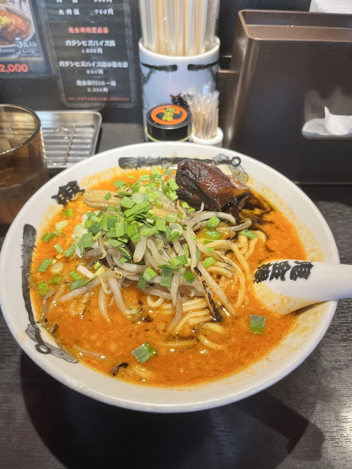

Kikanbou - Karashibi Miso Ramen

- Price: ¥1130
- Rating: 8.5/10
- Last date I had it : 2025-08-13
- Review: been here b4 but didn’t review last time, so here’s a review. this place is miso ramen but it’s spicy as shit. you can customize the heat level and numbness level; I’m weak so I did medium spice and low numbness but I think I could’ve gone higher. Along w/ that, it comes with a fatty piece of chashu and stir fried bean sprouts and chinese chives. Everything is done amazingly well, the thicker noodles help catch the strong soup and the whole bowl packs a punch. Not to mention the toppings are all top notch and also catch the strong soup. My only gripe is I’d need to order an additional bowl of rice to dump into all the soup goodness once I’m done with the noods. I’ll def try that next time.